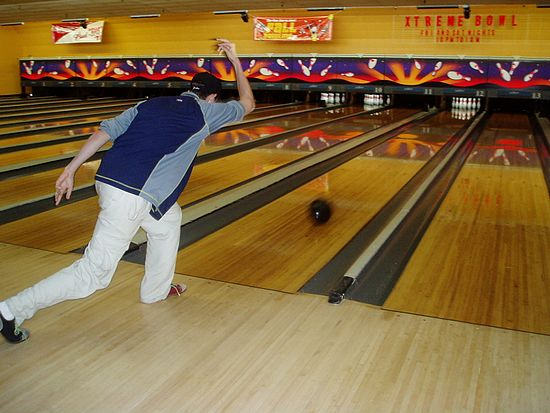

Bowling is a target sport and recreational activity in which a player rolls a ball toward pins (in pin bowling) or another target (in target bowling). The term bowling usually refers to pin bowling (most commonly ten-pin bowling), though in the United Kingdom and Commonwealth countries, bowling could also refer to target bowling, such as lawn bowls.
